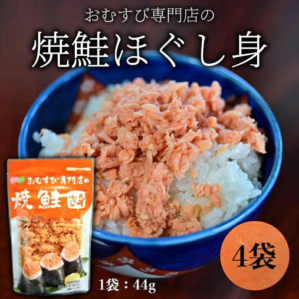
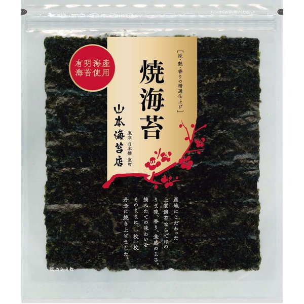
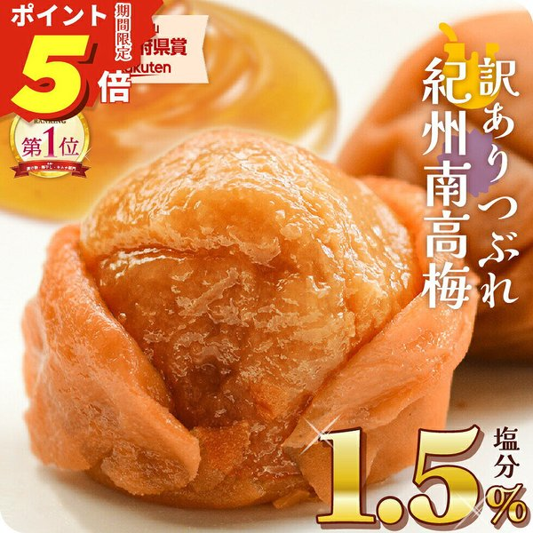
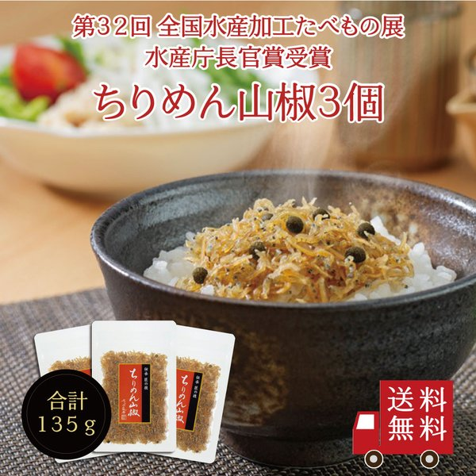
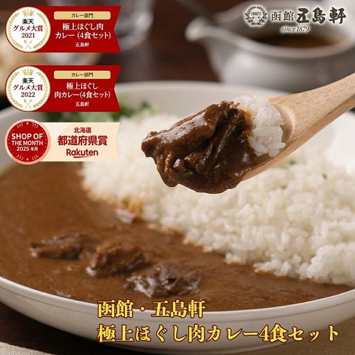
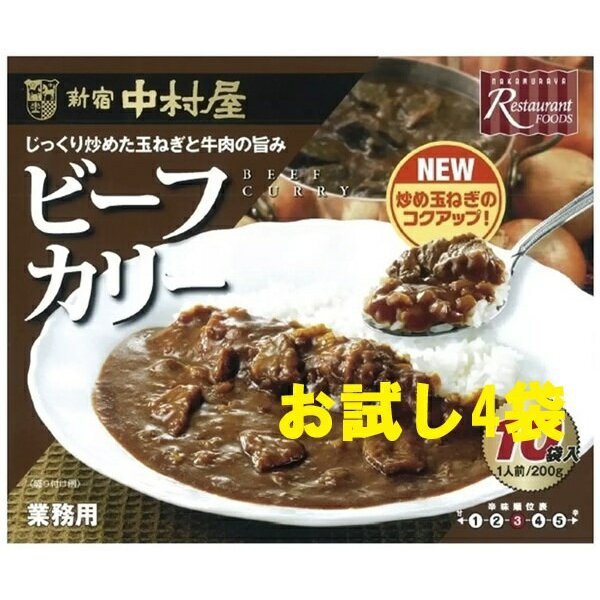
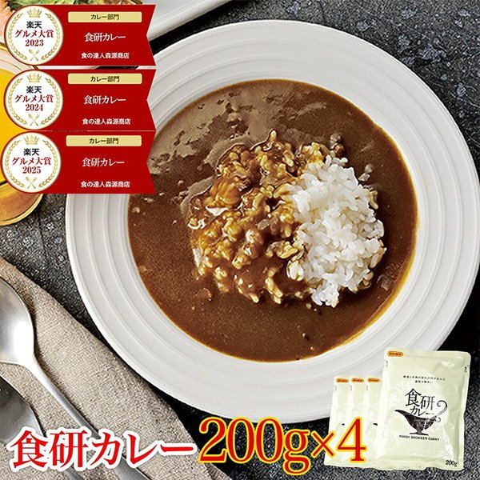

【2026年・ごはんのお供とレトルトカレー】白米が止まらない10選｜やまや明太子・山本海苔店・紀州南高梅・ちりめん山椒と五島軒・ゴーゴーカレーを実売価格で比較
白米が進まない日は、おかずの問題ではなく「ごはんのお供」が足りないだけかもしれません。明太子や鮭ほぐし、梅干しが1つあるだけで、朝ごはんの支度は一気に楽になります。
選ぶ軸は3つです。まず常温で置けるか。鮭ほぐしや佃煮は常温保存できるものを選ぶと、冷蔵庫を圧迫しません。次に塩分と量。梅干しは塩分表示を見て、毎日食べられる濃さを選ぶ。大容量の明太子は冷凍で小分けに使えるものが便利です。最後にカレー。レトルトカレーは、店の味を再現した名店系と、1食100〜200円台の日常使い系を1つずつ持つと、平日と休日の両方に対応できます。
本記事では、楽天市場で人気・高評価のごはんのお供とレトルトカレー10選を、実売価格とレビュー評価つきで写真付き紹介します。
- おすすめ10選 スペック・特徴比較表
- BEST 1｜あっぱれ 無着色 辛子明太子 600g
- BEST 2｜焼鮭ほぐし身 44g×4袋
- BEST 3｜焼き海苔 金 全形10枚
- BEST 4｜つぶれ梅 減塩 塩分1.5% 3L以上 220g
- BEST 5｜ちりめん山椒 45g×3個セット
- BEST 6｜極上ほぐし肉カレー 4食セット
- BEST 7｜レトルトカレー 10食 選べるセット
- BEST 8｜ビーフカリー 中辛 200g×4袋
- BEST 9｜食研カレー 中辛 200g×4袋
- BEST 10｜よこすか海軍カレー ネイビーブルー 中辛 180g
- 【読者負担0円】買わなくても得する無料サービス
- まとめ：ごはんのお供とレトルトカレー10選の選び方
| 順位 | 商品名 | ブランド | 最大の特徴・おすすめ理由 | 総合評価 |
|---|---|---|---|---|
| BEST 1 | あっぱれ 無着色 辛子明太子 600g | やまや | 無着色で素材の色を活かしている | 4.58 |
| BEST 2 | 焼鮭ほぐし身 44g×4袋 | オルソン（おむすび専門店） | 1袋44gの個包装で使い切りやすい | 4.85 |
| BEST 3 | 焼き海苔 金 全形10枚 | 山本海苔店 | 老舗の全形焼き海苔 | 4.79 |
| BEST 4 | つぶれ梅 減塩 塩分1.5% 3L以上 220g | トノハタ | 塩分1.5%の減塩 | 4.46 |
| BEST 5 | ちりめん山椒 45g×3個セット | 不二の昆布 | 45g×3個の食べ切りサイズ | 4.59 |
| BEST 6 | 極上ほぐし肉カレー 4食セット | 五島軒 | 函館の老舗のビーフカレー | 4.62 |
| BEST 7 | レトルトカレー 10食 選べるセット | ゴーゴーカレー | 中辛・辛口・甘口から選べる | 4.76 |
| BEST 8 | ビーフカリー 中辛 200g×4袋 | 新宿中村屋 | 老舗のレストラン用レトルト | 4.61 |
| BEST 9 | 食研カレー 中辛 200g×4袋 | 日本食研（食研カレー） | 楽天グルメ大賞3年連続受賞 | 4.64 |
| BEST 10 | よこすか海軍カレー ネイビーブルー 中辛 180g | 調味商事（横須賀海軍カレー本舗） | 海上自衛隊の金曜カレーを再現 | 4.34 |
あっぱれ 無着色 辛子明太子 600g

博多の明太子メーカー、やまやの「あっぱれ」は、着色料を使わない無着色の辛子明太子600gです。粒のそろった明太子をたっぷり入れた大容量タイプで、ごはんにそのままのせても、バターと合わせて明太子パスタにしても使えます。冷凍で届くので、食べる分だけ冷蔵庫で解凍して使えるのが扱いやすいところ。1本あるだけで、朝ごはんの満足度がはっきり変わります。楽天市場での実売価格は約4,988円（2026年11月時点）。
- 無着色で素材の色を活かしている
- 600gの大容量
- 冷凍で少しずつ使える
- 解凍後は冷蔵で2〜3日を目安に食べ切る
焼鮭ほぐし身 44g×4袋

北海道のおむすび専門店、オルソンの焼鮭ほぐし身です。北海道産の鮭を焼いてほぐし、1袋44gの個包装にした4袋セット。常温で保存できるので、おにぎり、お茶漬け、チャーハンの具として開けてすぐ使えます。瓶詰めの鮭フレークより小分けで扱いやすく、使い切れずに傷める心配がありません。楽天市場での実売価格は約1,320円（2026年11月時点）。
- 1袋44gの個包装で使い切りやすい
- 常温で保存できる
- 北海道産鮭の焼ほぐし
- レビューは71件と、ヒット商品としてはまだ少なめ
焼き海苔 金 全形10枚

明治3年創業の海苔の老舗、山本海苔店の焼き海苔「金」です。手巻き寿司やおにぎりを包める全形サイズの板のりで、口に入れるとほどけるように溶けるのが上位グレードの特徴。香りが立ち、ごはんの甘みを引き立てます。スーパーの格安海苔とは別物で、おにぎりを1個包むだけで食卓の印象が変わる海苔です。楽天市場での実売価格は約1,188円（2026年11月時点）。
- 老舗の全形焼き海苔
- 手巻き・おにぎりに使える
- 香りが立つ
- レビューは43件と少なく、価格は格安海苔より高い
つぶれ梅 減塩 塩分1.5% 3L以上 220g

紀州南高梅を塩分1.5%の甘い味付けで漬けた「つぶれ梅」です。3L以上の大粒の梅を天日塩と一緒に漬けているので、減塩でも味がぼやけません。つぶれ梅は形が崩れているぶん味がなじみやすく、ごはんにのせるだけでなく、焼酎の梅割りや梅肉和えにも使えます。塩分が気になる人でも、毎日1粒なら続けやすい味です。楽天市場での実売価格は約1,480円（2026年11月時点）。
- 塩分1.5%の減塩
- 3L以上の大粒
- 220gで毎日使いやすい
- つぶれ梅なので、形や大きさは不揃い
ちりめん山椒 45g×3個セット

京都の昆布問屋、不二の昆布のちりめん山椒です。ちりめんじゃこを山椒の実と一緒に甘辛く炊いた佃煮で、45g×3個の食べ切りサイズ。温かいごはんにのせるだけで、おにぎりが一品になります。山椒の香りは強すぎず、ちりめんの塩気と甘みのバランスがいいので、子どもも食べやすい味です。楽天市場での実売価格は約1,680円（2026年11月時点）。
- 45g×3個の食べ切りサイズ
- 京都の昆布問屋の佃煮
- おにぎり・お茶漬けに合う
- 開封後は冷蔵庫で保存し、早めに食べ切る
極上ほぐし肉カレー 4食セット

函館の老舗、五島軒のビーフカレーです。ほぐした牛肉が入った中辛のレトルトで、4食セット。五島軒は明治12年創業の洋食店で、カレーは店の看板メニューです。スパイシーさとまろやかさを両立した味で、湯煎でも電子レンジでも温められます。1日100セット限定のネコポス便なので、送料を抑えて試せるのも助かります。楽天市場での実売価格は約1,400円（2026年11月時点）。
- 函館の老舗のビーフカレー
- ほぐし肉入りの中辛
- 4食セットで試しやすい
- 具は肉中心なので、野菜は自分で足す
レトルトカレー 10食 選べるセット
金沢カレーの代表格、ゴーゴーカレーのレトルト10食セットです。中辛・辛口・甘口から選べ、1食ずつ温めて食べられます。金沢カレーは濃厚でとろみのあるルウが特徴で、千切りキャベツとカツをのせると店の見た目に近づきます。10食入りなので、家族で食べても1週間ほどもちます。常温保存できるため、ストックとしても便利です。楽天市場での実売価格は約3,424円（2026年11月時点）。
- 中辛・辛口・甘口から選べる
- 10食入り
- 常温で長期保存できる
- ルウが濃厚なので、あっさり派には重い
ビーフカリー 中辛 200g×4袋

新宿中村屋のビーフカリー、200g×4袋のレストラン用セットです。中村屋は1901年創業の老舗で、日本にインドカリーを広めた店として知られています。牛肉と玉ねぎをじっくり煮込んだ中辛の味で、1袋200gと食べごたえがあります。ごはん少なめでも満足できるので、夜遅い日の1食にも向いています。楽天市場での実売価格は約1,149円（2026年11月時点）。
- 老舗のレストラン用レトルト
- 1袋200gで食べごたえがある
- 4袋セット
- レビューは67件と、まだ実績は少なめ
食研カレー 中辛 200g×4袋

日本食研の「食研カレー」は、楽天グルメ大賞を3年連続で受賞したロングセラーです。200g×4袋の中辛で、牛肉と野菜の旨みを煮込んだオーソドックスな味。業務用としても使われる商品なので、味にクセがなく家族全員で食べられます。常温で長期保存できるため、備蓄用としても優秀です。楽天市場での実売価格は約1,000円（2026年11月時点）。
- 楽天グルメ大賞3年連続受賞
- 200g×4袋
- 常温で備蓄できる
- 具は少なめなので、野菜を足すと食べごたえが出る
よこすか海軍カレー ネイビーブルー 中辛 180g
横須賀海軍カレーの「ネイビーブルー」は、海上自衛隊が毎週金曜に食べるカレーを再現したレトルトです。中辛で180g、2食・3食・10食から選べます。牛乳を加えたまろやかな味で、給食のカレーを思い出す懐かしさがあります。ご当地カレーを食べ比べたい人にも、まず2食から試せるのがいいところです。楽天市場での実売価格は約1,450円（2026年11月時点）。
- 海上自衛隊の金曜カレーを再現
- 中辛で子どもも食べやすい
- 2食から試せる
- 具は少なく、ルウの味を楽しむタイプ
この記事の商品を買う前に、まずは無料で得する選択肢をチェック。どれも登録・利用は0円で、無料期間中に解約すれば料金はかかりません。読みたい雑誌がある人、ポイントを貯めたい人、アンケートなら気軽という人、それぞれに合うものを選べます。
初回31日無料・無料期間中に解約すれば0円 → 楽天ポイントモール｜登録無料で毎日ポイ活
買い物なしでもポイントが貯まる無料サービス → 楽天インサイト｜アンケートに答えてポイント
登録無料・すきま時間のアンケートで貯まる → 楽天カード｜年会費永年無料
新規発行・年会費ずっと0円 →
4つのサービスの違いと使い分けは「出費0円で得する！買わずにポイントが貯まる無料サービス厳選4選」でまとめています。
💡 まとめ：ごはんのお供とレトルトカレー10選の選び方
ごはんのお供は、常温で置けるものを2つ持つと朝が変わります。鮭ほぐしとちりめん山椒があれば、おにぎりもお茶漬けも5分で用意できます。明太子は冷凍の大容量を選び、食べる分だけ解凍すれば長く使えます。梅干しは塩分表示を見て、毎日食べられる濃さを。カレーは、五島軒や新宿中村屋のような名店系を1つ、食研カレーのような日常使い系を1つ持つと、平日の夜と休日のごちそうの両方に対応できます。ゴーゴーカレーや海軍カレーのようなご当地系は、食べ比べ用に1箱あると家族の楽しみが増えます。
楽天市場では「5と0のつく日」や「お買い物マラソン」などのキャンペーンに合わせて購入すると、ポイント還元が最大化してお得に手に入ります。ぜひチェックしてみてくださいね。